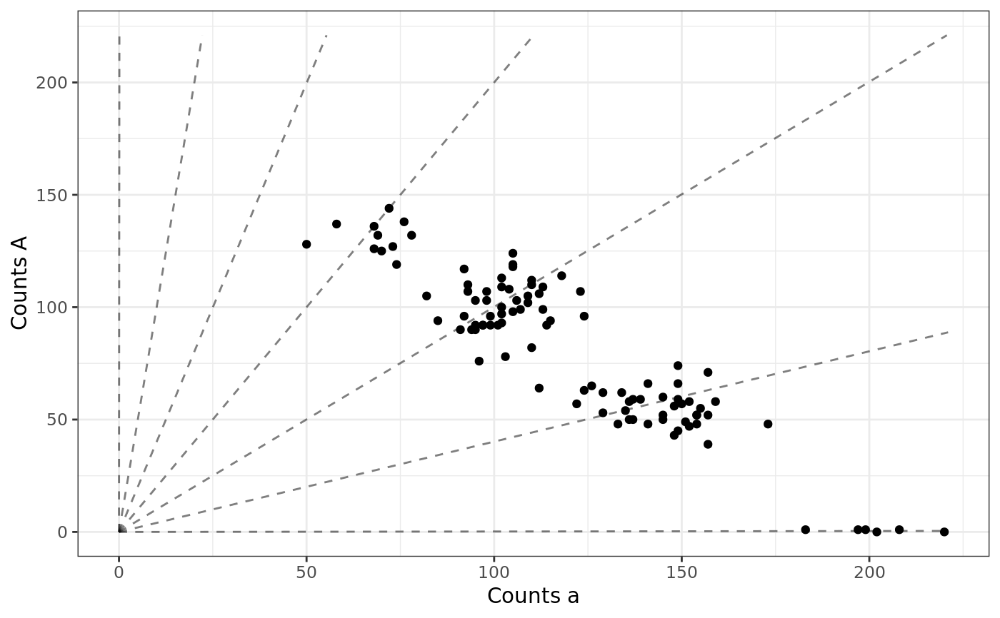

This will take a vector of genotypes and a vector of total read-counts, then generate a vector of reference
counts. To get the genotypes, you could use rgeno. The likelihood used to generate read-counts
is described in detail in Gerard et. al. (2018).
Arguments
- sizevec
A vector of total read-counts for the individuals.
- geno
A vector of genotypes for the individuals. I.e. the number of reference alleles each individual has.
- ploidy
The ploidy of the species.
- seq
The sequencing error rate.
- bias
The bias parameter. Pr(a read after selected) / Pr(A read after selected).
- od
The overdispersion parameter. See the Details of the
rhovariable inbetabinom.
Value
A vector the same length as sizevec. The ith element
is the number of reference counts for individual i.
References
Gerard, D., Ferrão, L. F. V., Garcia, A. A. F., & Stephens, M. (2018). Genotyping Polyploids from Messy Sequencing Data. Genetics, 210(3), 789-807. doi:10.1534/genetics.118.301468 .
Gerard, David, and Luís Felipe Ventorim Ferrão. "Priors for genotyping polyploids." Bioinformatics 36, no. 6 (2020): 1795-1800. doi:10.1093/bioinformatics/btz852 .
See also
rgeno for a way to generate genotypes of individuals. rbetabinom
for how we generate the read-counts.
Examples
set.seed(1)
n <- 100
ploidy <- 6
## Generate the genotypes of individuals from an F1 population,
## where the first parent has 1 copy of the reference allele
## and the second parent has two copies of the reference
## allele.
genovec <- rgeno(n = n, ploidy = ploidy, model = "f1",
p1geno = 1, p2geno = 2)
## Get the total number of read-counts for each individual.
## Ideally, you would take this from real data as the total
## read-counts are definitely not Poisson.
sizevec <- stats::rpois(n = n, lambda = 200)
## Generate the counts of reads with the reference allele
## when there is a strong bias for the reference allele
## and there is no overdispersion.
refvec <- rflexdog(sizevec = sizevec, geno = genovec,
ploidy = ploidy, seq = 0.001,
bias = 0.5, od = 0)
## Plot the simulated data using plot_geno.
plot_geno(refvec = refvec, sizevec = sizevec,
ploidy = ploidy, seq = 0.001, bias = 0.5)
